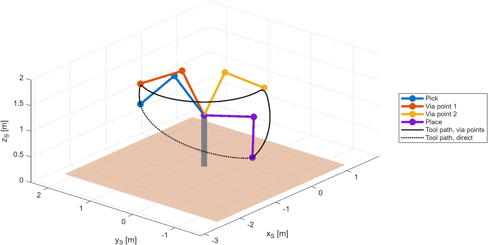
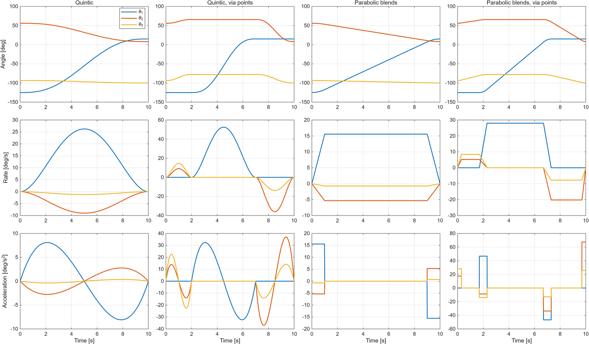
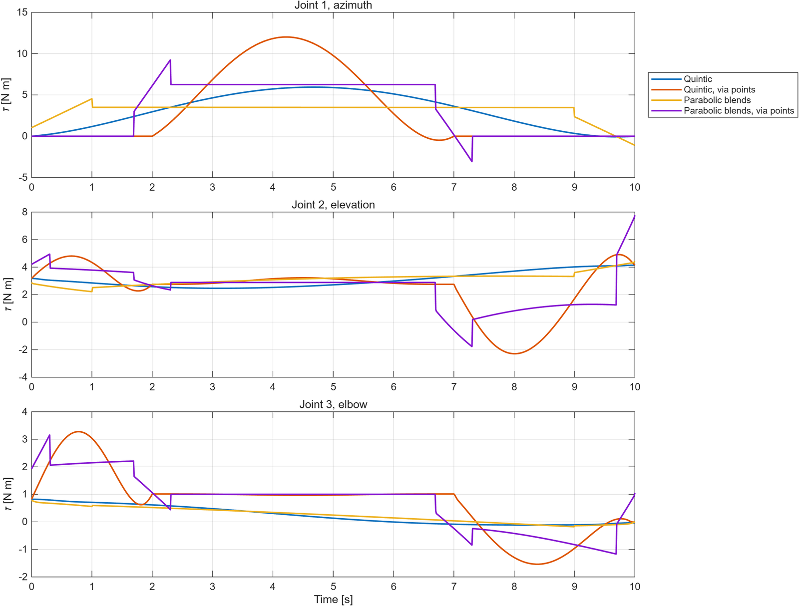
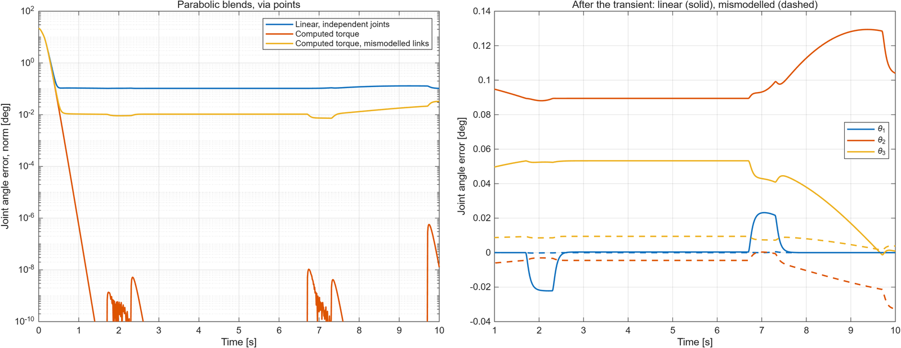
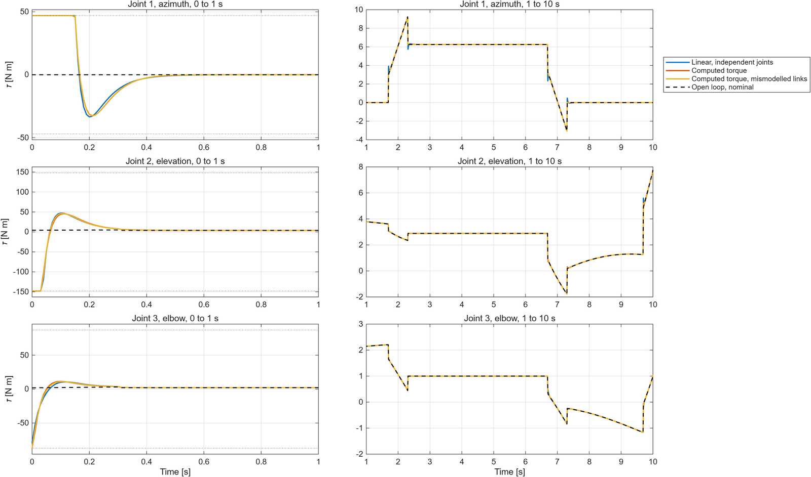

Back to ProjectsTorna a Progetti
Space manipulator: kinematics, dynamics and controlManipolatore spaziale: cinematica, dinamica e controllo
Final exercise, Space Robotic Systems, Sapienza University of Rome, 2020/2021, revisited in 2026
Esercizio finale, Space Robotic Systems, Sapienza Università di Roma, 2020/2021, ripreso nel 2026
A simplified model of the Instrument Deployment Arm of NASA's InSight lander, which placed the seismometer and the heat probe on the surface of Mars. In MATLAB I took the arm through the full chain of manipulator design: kinematics, workspace, trajectory generation, dynamics, and linear and nonlinear control, ending with a test of the controller on a wrong model of the arm.
Un modello semplificato dell'Instrument Deployment Arm del lander InSight della NASA, che ha posato il sismometro e la sonda termica sulla superficie di Marte. In MATLAB ho portato il braccio attraverso l'intera catena di progetto di un manipolatore: cinematica, spazio di lavoro, generazione delle traiettorie, dinamica, e controllo lineare e non lineare, concludendo con una prova del controllore su un modello errato del braccio.
- 3revolute jointsgiunti rotoidali
- 10 spick and place manoeuvremanovra di presa e rilascio
- 0.3 sto cancel an initial error of 15°per annullare un errore iniziale di 15°
- 0.03°residual error with a wrong modelerrore residuo con un modello errato
The armIl braccio
The arm has three revolute joints (shoulder azimuth, shoulder elevation and elbow) and two links of 1 m and 0.8 m, modelled as hollow cylinders in a carbon fibre and titanium mix, weighing 0.87 kg and 0.70 kg. Each joint is driven by a DC motor through a gearbox with a 125:1 or 100:1 ratio, with viscous and Coulomb friction and its own torque and angle limits. The shoulder sits 1 m above the ground on the lander deck, and the task is to pick an instrument from the deck and place it on the Martian surface in 10 s.
Il braccio ha tre giunti rotoidali (azimut della spalla, elevazione della spalla e gomito) e due bracci da 1 m e 0,8 m, modellati come cilindri cavi in una miscela di fibra di carbonio e titanio, da 0,87 kg e 0,70 kg. Ogni giunto è azionato da un motore in corrente continua tramite un riduttore con rapporto 125:1 o 100:1, con attrito viscoso e di Coulomb e con i propri limiti di coppia e di angolo. La spalla si trova a 1 m da terra sul ponte del lander, e il compito è prendere uno strumento dal ponte e posarlo sulla superficie di Marte in 10 s.

Kinematics and workspaceCinematica e spazio di lavoro
I described the arm with Denavit-Hartenberg parameters and derived the transformation from the base to the tool. The inverse kinematics is solved in closed form with an algebraic method and gives four solutions; I chose the one with the elbow up, above the line from the shoulder to the tool, which keeps the arm clear of the lander deck when picking. Running the inverse kinematics over a grid of points gives the section of the workspace 35 cm above the ground: a ring around the shoulder. The azimuth joint cannot turn between 150° and −135°, yet that wedge is almost all reachable, because the points are below the shoulder and the arm can reach them backwards, with the elevation below −90°. Only two small notches are lost.
Ho descritto il braccio con i parametri di Denavit-Hartenberg e ricavato la trasformazione dalla base all'utensile. La cinematica inversa è risolta in forma chiusa con un metodo algebrico e dà quattro soluzioni; ho scelto quella con il gomito alto, sopra la retta tra spalla e utensile, che tiene il braccio lontano dal ponte del lander al momento della presa. Applicando la cinematica inversa su una griglia di punti si ottiene la sezione dello spazio di lavoro a 35 cm da terra: una corona circolare attorno alla spalla. Il giunto di azimut non può ruotare tra 150° e −135°, eppure quel settore è quasi tutto raggiungibile, perché i punti sono sotto la spalla e il braccio può raggiungerli all'indietro, con l'elevazione sotto i −90°. Si perdono solo due piccole tacche.

Trajectory generationGenerazione delle traiettorie
I generated the joint trajectories in four ways: fifth order polynomials and linear functions with parabolic blends, each with and without via points. The two via points make the manoeuvre safe: first the tool is lifted 40 cm straight up from the deck, then the arm turns in azimuth with its shape frozen, and only then it lowers the tool to the ground. The polynomials stop at each via point and give the smoothest motion; the parabolic blends do not stop and pass near, but not exactly through, the via points, with steps in the acceleration.
Ho generato le traiettorie dei giunti in quattro modi: polinomi di quinto ordine e funzioni lineari con raccordi parabolici, ciascuno con e senza punti di via. I due punti di via rendono sicura la manovra: prima l'utensile viene sollevato di 40 cm in verticale dal ponte, poi il braccio ruota in azimut mantenendo la sua forma, e solo dopo abbassa l'utensile sul terreno. I polinomi si fermano in ogni punto di via e danno il moto più regolare; i raccordi parabolici non si fermano e passano vicino ai punti di via ma non esattamente su di essi, con gradini nell'accelerazione.

DynamicsDinamica
I derived the equations of motion symbolically with the iterative Newton-Euler algorithm, in the form τ = M(θ)θ̈ + V(θ, θ̇) + G(θ), and rewrote them in configuration space with separate Coriolis and centrifugal terms. Viscous and Coulomb friction of the motors, reflected through the gearboxes, complete the model, and the motor inertias are added to the mass matrix. In the rewrite I checked the equations against an independent Lagrangian model and against the conservation of energy of the free arm. The torques needed to follow the trajectories stay far below the motor limits, at most 12 N m on the azimuth, where they are mostly friction: through a 125:1 gearbox the motor's viscous friction becomes 12.8 N m s/rad at the joint.
Ho ricavato simbolicamente le equazioni del moto con l'algoritmo iterativo di Newton-Eulero, nella forma τ = M(θ)θ̈ + V(θ, θ̇) + G(θ), e le ho riscritte nello spazio delle configurazioni con termini di Coriolis e centrifughi separati. L'attrito viscoso e di Coulomb dei motori, riportato attraverso i riduttori, completa il modello, e le inerzie dei motori sono aggiunte alla matrice di massa. Nella riscrittura ho verificato le equazioni con un modello lagrangiano indipendente e con la conservazione dell'energia del braccio libero. Le coppie necessarie a seguire le traiettorie restano molto sotto i limiti dei motori, al massimo 12 N m sull'azimut, dove sono soprattutto attrito: attraverso un riduttore 125:1 l'attrito viscoso del motore diventa 12,8 N m s/rad al giunto.

ControlControllo
Both controllers start from a wrong initial pose, 15° away from the planned trajectory on two joints, and use a partitioned trajectory following law with gains chosen for critical damping. The motors saturate for the first 0.15 s, and every controller cancels the error in about 0.3 s.
Entrambi i controllori partono da una posa iniziale errata, a 15° dalla traiettoria pianificata su due giunti, e usano una legge partizionata a inseguimento di traiettoria con guadagni scelti per lo smorzamento critico. I motori saturano per i primi 0,15 s, e ogni controllore annulla l'errore in circa 0,3 s.
- Linear control. Each joint is treated as an independent second order system with constant effective inertia, dominated by the motor through the gearbox. The error settles at 0.13° on the elevation joint: that is gravity, which the law does not compensate, and it matches the value predicted from the gains, 0.128°.
- Nonlinear control. A computed torque law uses the full model, M(θ), V, G and friction, to linearise and decouple the joints. The error drops below a millionth of a degree.
- Wrong model. Running the nonlinear controller with link lengths of 1.15 m and 0.73 m instead of 1 m and 0.8 m, the decoupling is no longer exact, but the arm still follows the trajectory with a residual error of 0.03°, four times better than the linear controller with a perfect model.
- Controllo lineare. Ogni giunto è trattato come un sistema del secondo ordine indipendente con inerzia effettiva costante, dominata dal motore attraverso il riduttore. L'errore si stabilizza a 0,13° sul giunto di elevazione: è la gravità, che la legge non compensa, e coincide con il valore previsto dai guadagni, 0,128°.
- Controllo non lineare. Una legge a coppia calcolata usa il modello completo, M(θ), V, G e attrito, per linearizzare e disaccoppiare i giunti. L'errore scende sotto il milionesimo di grado.
- Modello errato. Usando il controllore non lineare con bracci di 1,15 m e 0,73 m invece di 1 m e 0,8 m, il disaccoppiamento non è più esatto, ma il braccio segue comunque la traiettoria con un errore residuo di 0,03°, quattro volte migliore del controllore lineare con modello perfetto.


CodeCodice
The MATLAB code is on GitHub: it needs base MATLAB only, checks its own model, and produces every figure on this page. The original 2021 report, in Italian, is also available.
Il codice MATLAB è su GitHub: richiede solo MATLAB di base, verifica il proprio modello e produce tutte le figure di questa pagina. È disponibile anche il report originale del 2021.
GitHub repositoryRepository GitHub 2021 report (PDF, in Italian)Report 2021 (PDF)